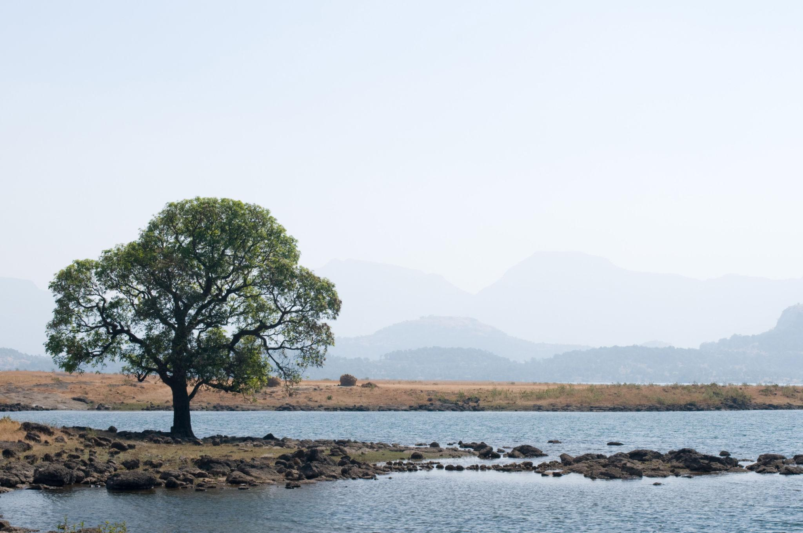
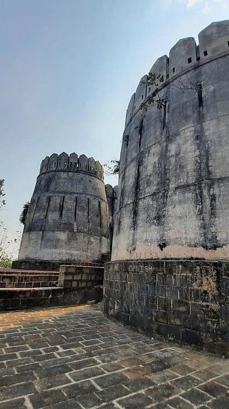
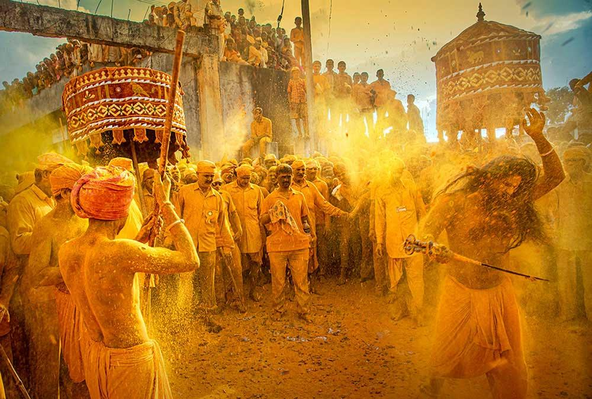
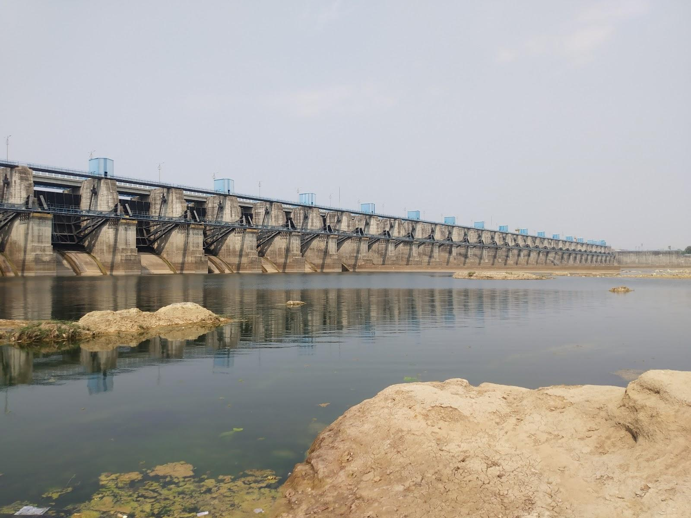
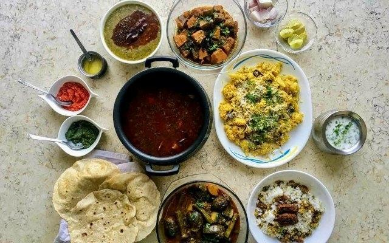
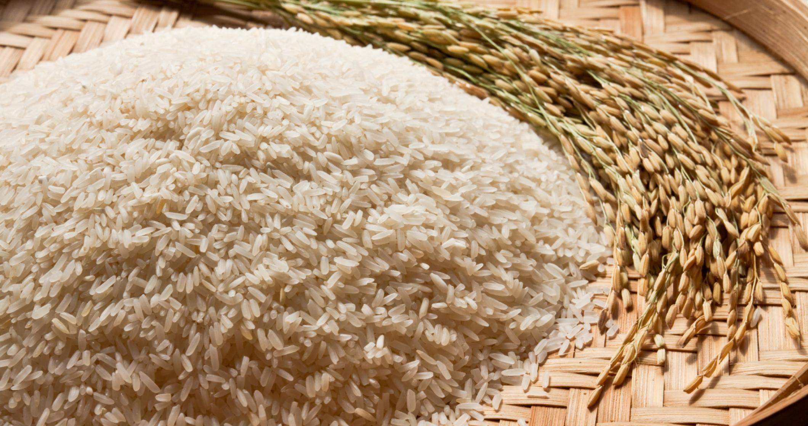
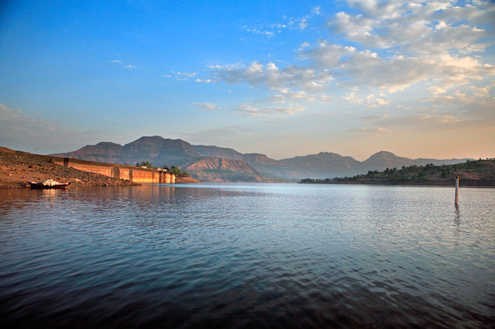
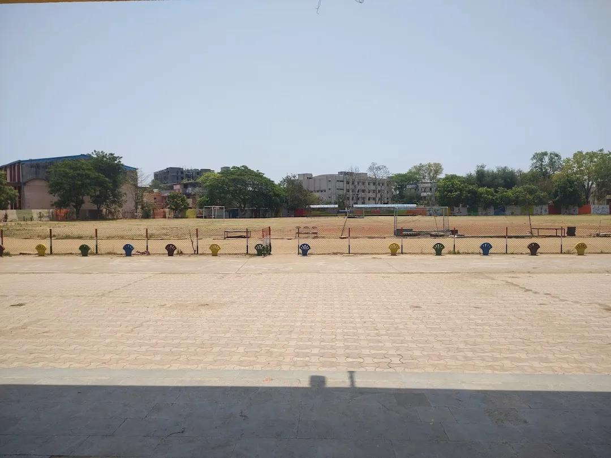

About

Located east of Nagpur, Bhandara is the administrative headquarters of the Bhandara district. It serves as a vital gateway connecting central India and is famously split by the Wainganga and Sur rivers. The region is defined by its fertile plains and a landscape dotted with numerous picturesque water bodies.
- Location:Northeastern Maharashtra, east of Nagpur along the Wainganga River.
- Famous as:The "District of Lakes" and India's "Brass City."
History

The district boasts a historical legacy tracing back to the 7th century when it was part of the Maha Kosala and Haihaya Yadav kingdoms. Its name derives from "Bhannara," an 11th-century stone inscription. Over the centuries, it was governed by the Panwar Rajputs, the Gondwana leaders, and the Maratha Peshwas before Parasoji Bhonsle integrated it into Vidarbha in 1699.
- Bhandara is a beautiful city in northeastern Maharashtra, located right along the scenic Wainganga River. Known as the "District of Lakes" and the "Brass City," it is famous for its large metal industries and thousands of local water bodies. The area has a rich history linked to old kingdoms and features beautiful green nature spots like the Nagzira Wildlife Sanctuary. Today, it thrives on growing rice, making brass items, and celebrating colorful local festivals.
Culture

Bhandara is a rich amalgamation of diverse communities, deeply influenced by its Gond and Maratha heritage. The culture here shines brightly during vibrant festivals like Diwali, Holi, and Pola, which celebrate agrarian roots. Traditional music, local folklore, and traditional handloom weaving form the backbone of the region's cultural identity.
- Main Festivals:Pola, Diwali, and Ganesh Chaturthi.
- Traditional Arts:Brass copperware crafting and handloom fabric weaving.
- Language:Marathi (specifically the Varhadi dialect).
Tourism

Often called the "District of Lakes," Bhandara offers serene eco-tourism and wildlife experiences. The nearby Nagzira Wildlife Sanctuary is a major attraction, while the Gosekhurd Dam and Ambagad Fort draw history buffs and nature lovers. Religious tourism is also prominent, with the Chandpur Temple being a major regional pilgrimage site.
- Gosekhurd Dam: Huge river dam with 33 gates, perfect for water views and photography.
- Koka Sanctuary: Dense forest park with jeep safaris to see tigers and leopards.
- Korambhi Temple: Hilltop religious shrine offering beautiful river views and sunsets.
Famous Food

The local cuisine of Bhandara is a delightful reflection of traditional Vidarbha and Maharashtrian flavors. The Wainganga River provides a fresh supply of fish, making spicy fish curries a local delicacy. Other staples include Poha, Jhunka Bhakar, Surali Wadi, and the use of locally grown aromatic rice and robust lentils.
- Famous Food:Fish curry cooked in fiery Saoji spices alongside fresh rice.
- Local Specialty:Aromatic Chinnor rice and handmade brass utensils.
Economy

Bhandara’s economy relies on a balanced mix of agriculture and industry. The district is famously known as the "Brass City" due to its thriving brass and copperware manufacturing industries. Additionally, the fertile lands make rice cultivation and horticulture primary agricultural drivers, while forestry and local handloom textiles provide major avenues for rural employment.
- Key Industries:Brass utensils manufacturing, rice milling, silk weaving, and ordnance factories.
- Main Crops:Paddy (Rice)—earning it the name "Rice Bowl of Maharashtra"—along with soybean, pigeonpea (tur), and wheat.
Environment

Blessed with lush green forests, undulating hills, and a dense network of water bodies, Bhandara’s environment is highly biodiverse. The district’s numerous wetlands host migratory birds and rich aquatic life, making it a critical area for eco-conservation. The regional climate is tropical, supporting dense teak forests and diverse wildlife.
- Climate:Hot and dry tropical climate with summers regularly passing 45°C, heavy monsoons, and mild winters.
- Key Rivers:Wainganga River, along with its main tributaries the Bawanthadi River and Ambagarh River.
- Protected Areas:Koka Wildlife Sanctuary and New Nagzira Wildlife Sanctuary.
Sports

Like much of Maharashtra, sports in Bhandara are deeply tied to traditional and modern disciplines. Wrestling (kushti), kabaddi, and kho-kho are deeply rooted in the local culture and widely played in rural areas. The youth are also increasingly active in cricket, athletics, and football, supported by growing local infrastructure and community clubs.
- Traditional Sports:Kabaddi, Kho-Kho, and traditional mud wrestling (Kushti).
- Focus: Building physical fitness, encouraging rural talent, and hosting regional school-level tournaments.